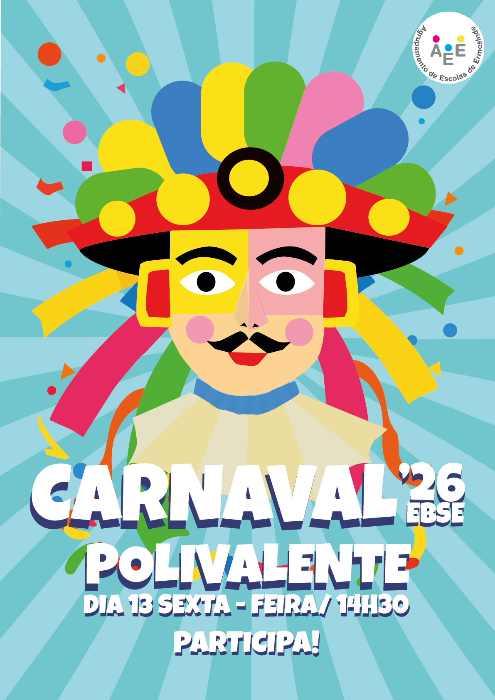
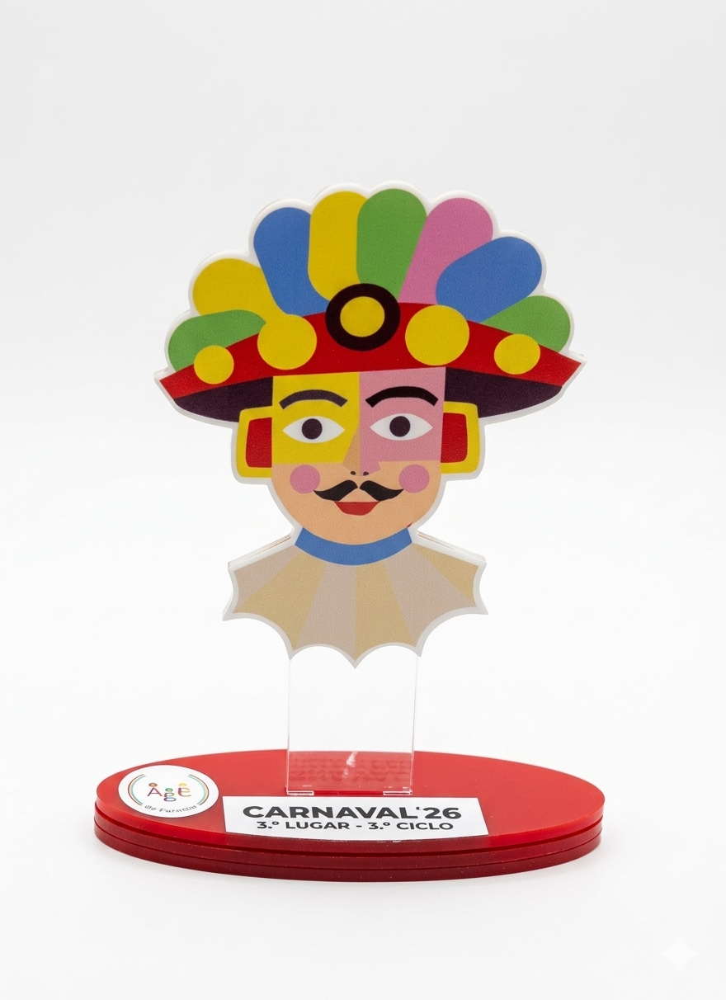
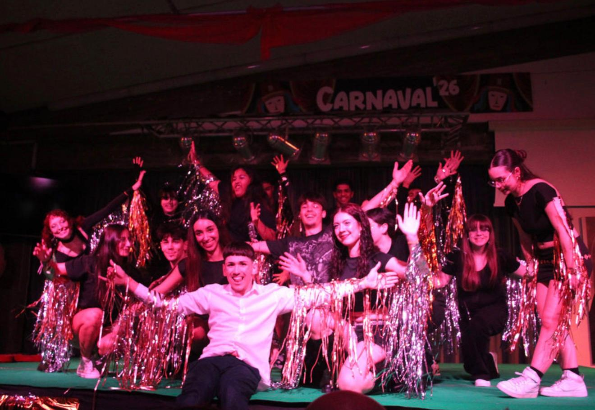
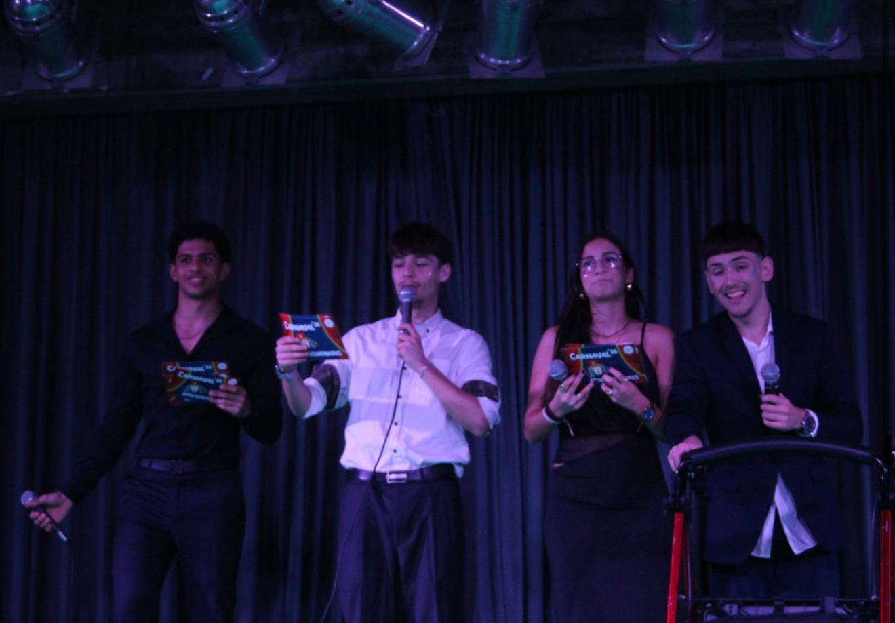
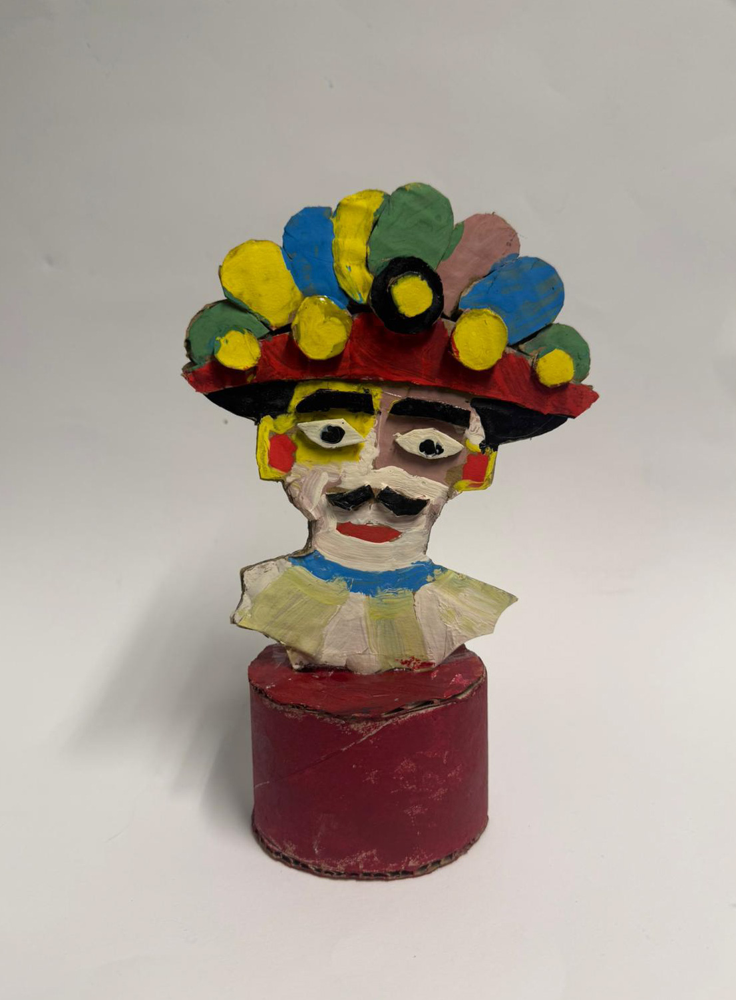

Sobre o Evento
O Carnaval de 2026 realizou-se na Escola Básica e Secundária de Ermesinde, com música, dança e muita animação. O evento contou ainda com um concurso criativo, onde os alunos mostraram a sua originalidade e espírito carnavalesco.




Vídeo Promocional
Realizado por: Dinis Soares
Vídeo de divulgação do evento, criado para anunciar o local e convidar a comunidade a participar no Carnaval. Trabalho realizado pelo aluno Dinis Soares.
Troféu Oficial

Troféu Carnaval
Aqui está a maquete desenvolvida para o troféu do terceiro cinco, elaborada com recurso a materiais reutilizáveis. Este projeto procura aliar a criatividade à sustentabilidade, promovendo a reutilização de materiais e a redução do desperdício.
Contactos
Email: carnaval@escola.pt
Escola Básica e Secundária de Ermesinde – 2026